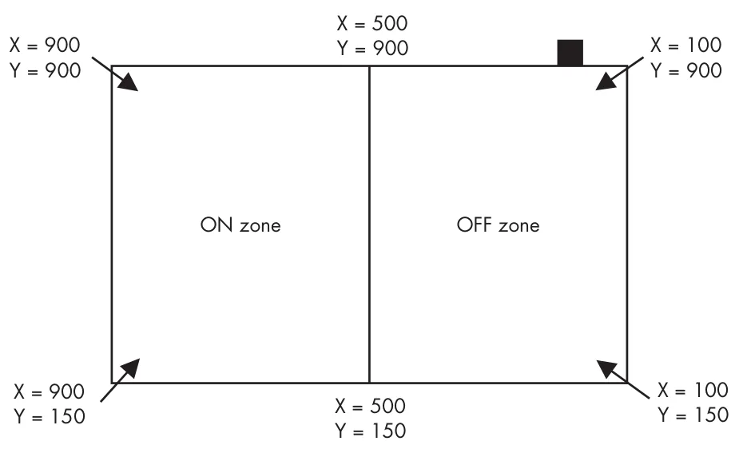
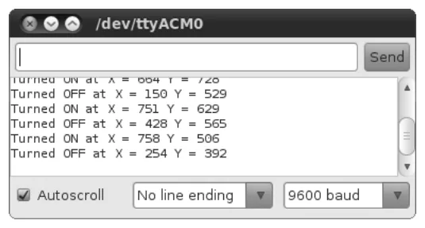

In this project, we’ll use our touchscreen map to create an on/off switch. Start by dividing the touchscreen in half vertically, as shown in Figure 10-5: the left side will be “on” and the right side will be “off.”

The Arduino will determine which zone of the touchscreen is touched by comparing the recorded coordinates of the touches to the boundaries of each half of the screen. After the zone has been determined, a digital output could send the on or off signal, but for this sketch we’ll simply display in the Serial Monitor whether a zone has been turned on or off.
The Sketch
Enter and upload the following sketch:
// Project 35 - Creating a Two-Zone On/Off Touch Switch
int x,y = 0;
void setup()
{
Serial.begin(9600);
pinMode(10, OUTPUT);
}
void switchOn()
{
digitalWrite(10, HIGH);
Serial.print("Turned ON at X = ");
Serial.print(x);
Serial.print(" Y = ");
Serial.println(y);
delay(200);
}
void switchOff()
{
digitalWrite(10, LOW);
Serial.print("Turned OFF at X = ");
Serial.print(x);
Serial.print(" Y = ");
Serial.println(y);
delay(200);
}
int readX() // returns the value of the touchscreen's x-axis
{
int xr=0;
pinMode(A0, INPUT);
pinMode(A1, OUTPUT);
pinMode(A2, INPUT);
pinMode(A3, OUTPUT);
digitalWrite(A1, LOW); // set A1 to GND
digitalWrite(A3, HIGH); // set A3 as 5V
delay(5);
xr=analogRead(0);
return xr;
}
int readY() // returns the value of the touchscreen's y-axis
{
int yr=0;
pinMode(A0, OUTPUT);
pinMode(A1, INPUT);
pinMode(A2, OUTPUT);
pinMode(A3, INPUT);
digitalWrite(A0, LOW); // set A0 to GND
digitalWrite(A2, HIGH); // set A2 as 5V
delay(5);
yr=analogRead(1);
return yr;
}
void loop()
{
x=readX();
y=readY();
❶ // test for ON
if (x<=900 && x>=500)
{
switchOn();
}
❷ // test for OFF
if (x<500 && x>=100)
{
switchOff();
}
}How It Works
The two if functions used in void loop() check for a touch on the left or right side of the screen. If the left side is touched, the touch is detected as an “on” press at ❶. If the right side is touched (an “off” press), the touch is detected at ❷.
Testing the Sketch
The resulting output of the sketch that appears in the Serial Monitor is shown in Figure 10-6. The status of the switch and the coordinates are shown after each screen touch.
